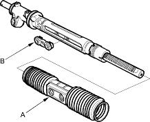
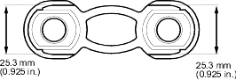
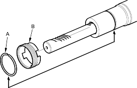
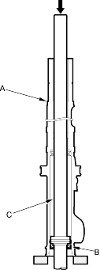

- Remove the special tool.
- Pull on the cylinder to remove it from the gearbox housing. Remove boot A and the slider guide (B) from the cylinder.

- Check the slider guide for damage and cracks. Using vernier callipers to measure the thickness of the slider guide. If the thickness is less than the service limit, replace the slider guide.

- Remove and discard the stop ring (A) on the cylinder by expanding it with snap ring pliers. Remove and discard the lock screw (B).

- Set the cylinder housing (A) in a press so the cylinder side points downward, then press the cylinder end seal (B) and steering rack (C) out of the cylinder. Hold the rack to keep it from falling when pressed clear.

- Remove the cylinder end seal from the steering rack.